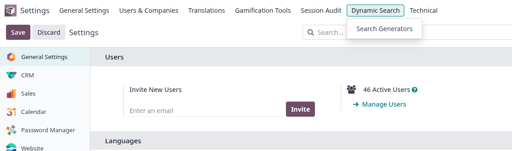
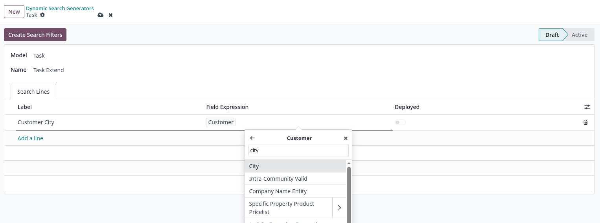
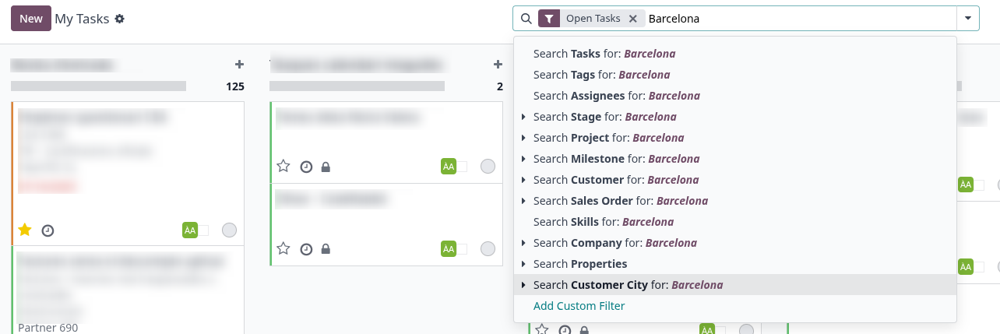
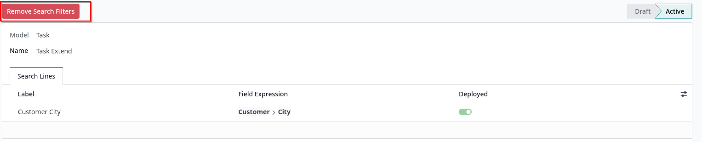

Key Features
Custom Search Filters
Relational Field Navigation
Deploy & Undeploy On Demand

Once the module is installed, navigate to Settings → Dynamic Search → Search Generators to access the filter management area. From here you can create, edit and organise all your custom search filters.

Create a new Search Generator by selecting the Model you want to filter and adding Search Lines. The Field Expression widget lets you navigate through relational fields — for example, selecting Customer expands its own fields such as City, allowing filters that span multiple related models.

City" style="max-height: 300px; width: auto;">Once deployed, the custom filters appear automatically in the search bar of the target model. In this example, the Customer City filter is available in the Tasks view, letting users search tasks by the city of the associated customer with no extra configuration.

When a filter is no longer required, return to its Search Generator record. In Active state a Remove Search Filters button is displayed, allowing you to cleanly undeploy the filter and remove it from the search bar without leaving residual configuration.

Custom Search Filters
Relational Field Navigation
Deploy & Undeploy On Demand